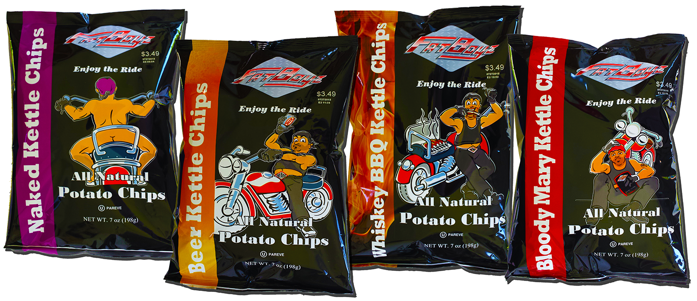
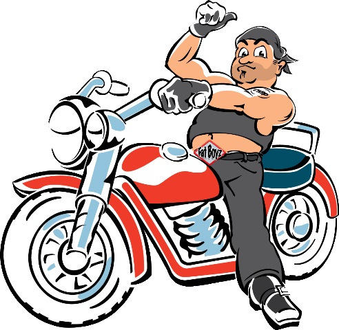

Take Your Taste Buds for a Ride


Beer Kettle Chips
There’s nothin’ better than a frosty cold one but sometimes the mood is there but the beer is not. That’s why I’m always wolfin’ down Fat Boyz Beer Chips. The perfect combination of sweet and savory with the remarkable taste and smell of beer! Remember- just because you should drink responsibly don’t mean you have to eat responsibly! Enjoy the ride!
Ingredients: Potatoes, Vegetable Oil (contains one or more of the following: Canola, Corn, Cottonseed, Safflower, Soybean or Sunflower), Sea Salt and Spices.
Bloody Mary Kettle Chips
I am so screwed up! Found myself sitting on the curb leaning against my bike- pounding headache, starving, and no clue as to how I got here. Last night must have been a party! I could sure use a drink to settle my brain and something to eat to settle my belly. No drinks in sight but thank that great biker angel in the sky for Fat Boyz Bloody Mary Chips. With its distinctive spicy tomato flavor it’s the perfect morning after or anytime snack! Enjoy the ride!
Ingredients: Potatoes, Vegetable Oil (contains one or more of the following: Canola, Corn, Cottonseed, Safflower, Soybean or Sunflower), Sea Salt and Spices.
Naked Kettle Chips
When I have extra cash, doesn't happen much, I play cards. I usually do OK. But not this time! That's what I get for playing with cagers instead of my biker brothers. These dudes were taking me for all I had, and then some! I owed a lot and didn't have it so I had no choice, I had to bolt! I blipped the throttle and took off. Got out by the seat of my ----- with my two favorite things, my hog and my Fat Boyz Naked Chips. Crunchy kettle chips and sea salt. Rip open a bad and dig in, one taste and you'll be wearing a smile, kind of like me right now! Enjoy the ride!
Ingredients: Potatoes, Vegetable Oil (contains one or more of the following: Canola, Corn, Cottonseed, Safflower, Soybean or Sunflower), Sea Salt and Spices..
Whiskey BBQ Chips
I know what you’re thinkin’, big deal, another BBQ chip jonesin’ to fake some boozy taste. Are you forgettin’ that this is me, Chip, and this is Fat Boyz! Think whiskey shots, my elixir of choice when I’m out there slavin’ over the grill, mixed with BBQ. Now tell me what could be better? Open the bag and take a whiff! Smells like you just dove into a cask of good old southern whiskey. Enjoy the great taste of whiskey together with sweet BBQ. CAUTION: It’s easy to get lost in a bag of these chips so don’t forget about the grill! There’s nothin’ worse than pissin’ off my biker buds by burnin’ the baby backs! Enjoy the ride!
Ingredients: Potatoes, Vegetable Oil (contains one or more of the following: Canola, Corn, Cottonseed, Safflower, Soybean or Sunflower), Sea Salt and Spices.
About
One day Jon & Steve were hanging out with not much to do...After a long time of talking about what to do the rest of their lives, they came up with nothing!
So 2 guys who were 2 Thirsty and Hungry bought some Kettle Chips, Beer, Bloody Mary Mix and some Whiskey...Well after being 2 Ferment they began to mix the Beer with the Chips then The Whiskey and some BBQ they grilled up with the Chips and when it was too late they cracked open the Bloody Mary mix and what the ____they mix it with the Kettle Chips....That was the way these 2 Guys got started!
Of course it took more than 2 Days many to perfect and today they offer 4 varieties of a uniquely package Kettle Chips.
As our slogan goes:
2 Guys-2 Days-2 Thirsty
2 Hungry-2 Bored
2 Fermented
Hunger for Taste - Enjoy!
Jon & Steve
“Dudes in Charge”
Some section